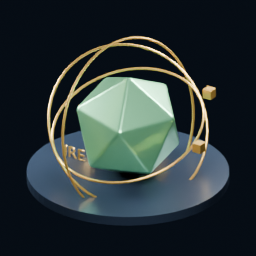

500 EDITIONS · ART INSCRIBED ON IRE
The first chapter.
Recorded on our chain.
First Light is a collection of 500 artworks prepared for native IRE inscriptions. This fallback page shares the approved artwork while the launch is being completed. It does not accept payments or distribute rewards.

Launch gates still apply
At the recovery checkpoint on October 17, 2026, block production resumed and the Mac and public seed matched at height 831,111. The native inscription upgrade is applied, but collection uploads, activation and public mint verification are not certified complete. This is a dated checkpoint, not a live status feed.
The collection opens only after all 500 artwork transactions finalize, activation succeeds, and wallet payment and ownership checks pass.
Planned mint price: 10 testnet IRE. Testnet tokens are not a promise of cash value, conversion, or future mainnet rewards.
Inspect all 500 artwork hashes →Participant rewards
The planned program grants 100 testnet IRE to each approved eligible participant, up to 500 participants and 50,000 IRE total. Eligibility rules, the approved address list, duplicate checks and finalized payout receipts must be verified before availability is announced. No rewards can be claimed on this page.
Keep your wallet private
This page never requests a recovery phrase, private key, wallet signature or payment. It does not expose the Mac wallet or validator. A local wallet address beginning with http://127.0.0.1 works only on the computer running it.
IRE source repository · Public node status JSON
Matching node heights and catching_up=false do not prove health. Check that block timestamps are recent and heights keep increasing. These are new-block inscriptions, not Bitcoin ordinals or modifications to old blocks.